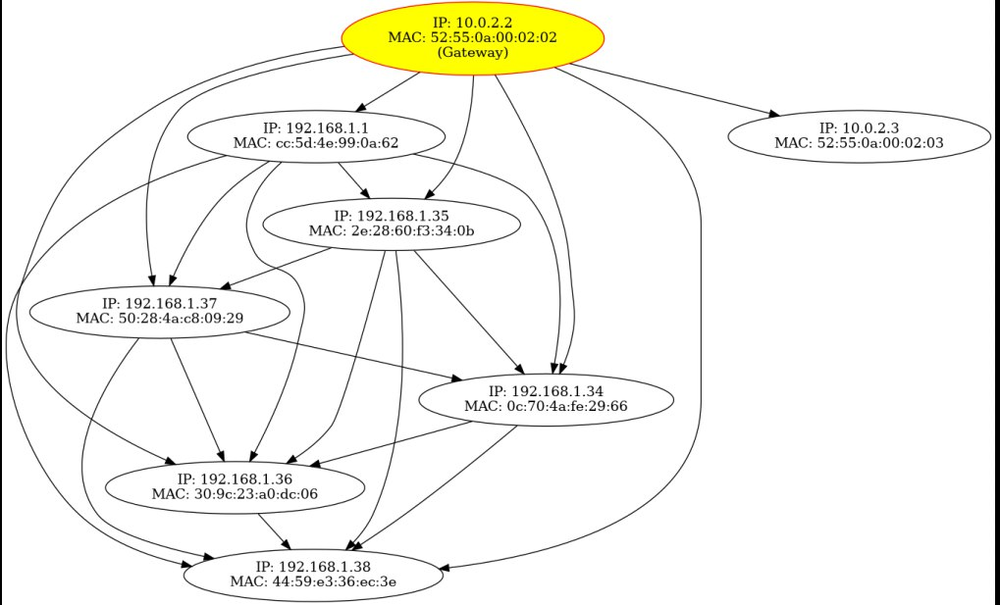
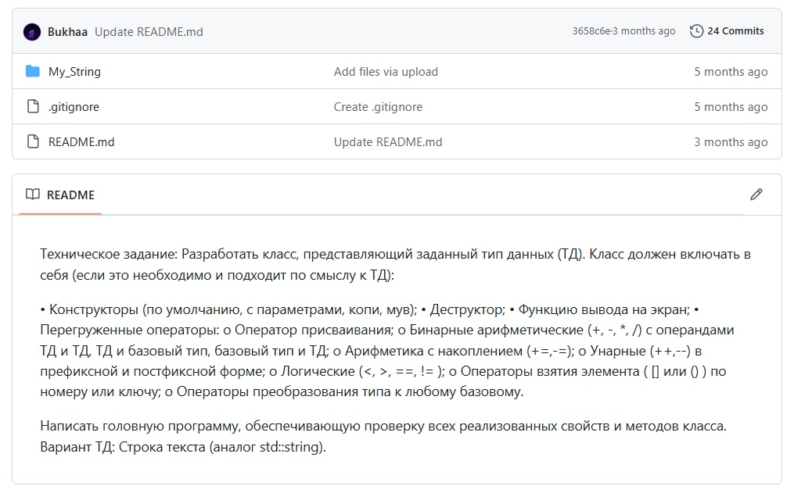
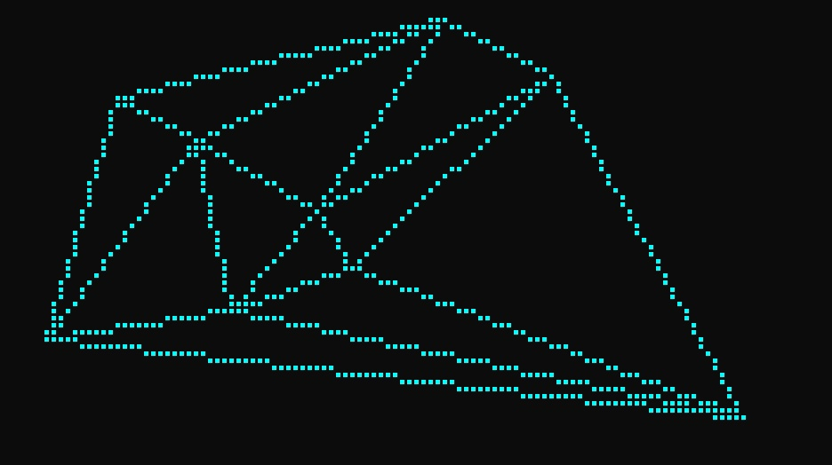
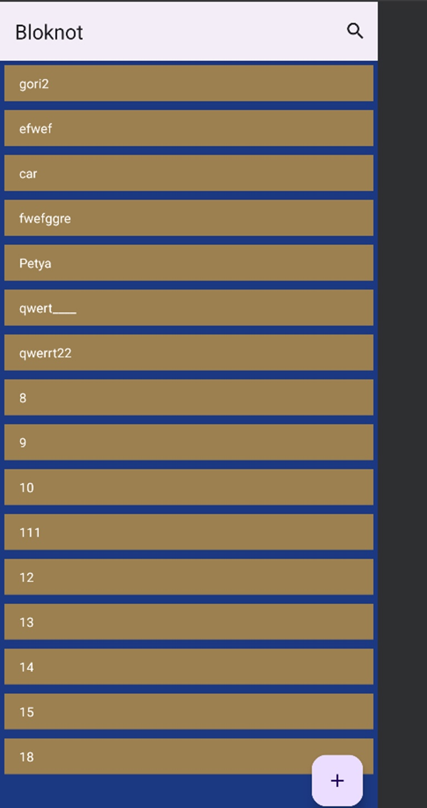
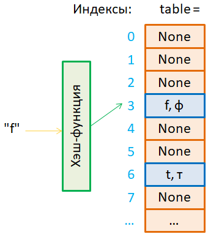

Бухаров Александр
Junior C/C++ разработчик
Привет! Я Junior разработчик из г. Новосибирск, Россия. В данный
момент прохожу стажировку в компании Eltex в лаборатории ethernet,
активно изучаю языки программирования C/C++, сетевые технологии и
компиляторы.
Предлагаю вам
узнать обо мне побольше
и ознакомиться с моими
проектами
Итак, начнём:
Как уже было сказано, меня зовут Александр, мне 21 год и я
начинающий разработчик.
На данный момент активно изучаю языки программирования
C и C++.
Хорошо понимаю принципы ООП, базисы разработки приложений, сетевые технологии и
toolchain. Владею: Linux, git, gdb, valgrind, wireshark, Make, имею опыт работы в GNS3.
В данный момент получаю высшее образование на очном отделении
НГТУ НЭТИ по специальности "Информационные системы и технологии".
Прошёл дополнительные образовательные курсы:
Курc “Системное программирование в Linux” от компании Eltex.
Онлайн курс по языку С от кафедры микропроцессорных технологий (МФТИ). Преподаватель: Владимиров Константин.
Онлайн курс по языку С++ от кафедры микропроцессорных технологий (МФТИ) – в процессе изучения. Преподаватель: Владимиров Константин.
Онлайн курс по компиляторам. Преподаватель: Владимиров Константин.
Полюбил писать максимально читаемый и красивый код после прочтения книги
"Чистый код"
Роберт Мартин.
Основные проекты с GitHub
Создание карты сети

Данная программа предназначена для мониторинга сети и создания графического
представления узлов. Она собирает информацию о сетевых узлах, записывает её в лог-файл и в формате
JSON, а также генерирует изображение графа в формате PNG. Для сборки использовали Make.
Репозиторий на GitLab
содержит подробно оформленный readme файл с полной информацией о
проекте, его зависимостях, использовании конечным пользователем, области применения, структуре проекта и т.п.
Аналог std::string на C++

Данная работа - курсовой проект по программированию за 2 курс.
Вот некоторые дополнительные требования:
Проект должен состоять из двух модулей: модуля класса и модуля головной программы.
Проект не должен содержать глобальных переменных и общедоступных членов данных класса.
Обработка ошибок должна быть выполнена с использованием исключений.
Алгоритм триангуляции Делоне на C++

Данный проект представляет собой расчётно графическую работу по компьютерной
графике за 1 курс.
Данная программа реализует алгоритм триангуляции Делоне для набора точек на плоскости и
визуализирует результат.
Приложение Блокнот на Java

Здесь реализовано мобильное приложение Блокнот
Функционал и некоторые требования:
1. 2 основных экрана
2. Работа с бд SQLite
3. Язык программирования - Java
4. По функционалу: Создавать заметки с возможностью добавления фотографии, редактировать их, удалять, поиск нужной заметки
5. Считывание и запись в бд производятся второстепенном потоке
Хеш-таблица с открытой адресацией на C++

Данный проект был выполнен как тренировочное задание по дисциплине
"Теория алгоритмов". Тема: хеш-функциии и хеш-таблицы. Применение хеширования.
Фукционал и требования:
Форма хеш-таблицыс открытой адресацией
Метод разрешения коллизий - линейное зондирование
Исходные данные (ключ) - целое число на интервале [0, +1 000 000 000]
Метод преобразования ключа в натуральное число - метод выбора цифр
Хеш-функция - модульная
Операции интерфейса: конструктор таблицы, поиск элемента по ключу k, вставка элемента по ключу k, удаление элемента по ключу k,
текущее количество элементов в таблице, текущий размер таблицы проверка на пустоту таблицы, вывод содержимого таблицы на экран, очистка таблицы
Реализовать дополнительную функцию - Поиск является ли массив подмассивом с использованием хэш-таблицы
Примечание: При выводе структуры хеш-таблицы с цепочками коллизий в строках экранадолжны отражаться индексы таблицы и значения ключей в цепочках
При выводе структуры хеш-таблицы с открытой адресацией в строках экрана должны отражаться индексы таблицы, значения ключей, состояния ячеек хеш -таблицы (free / busy / deleted)
Остались вопросы? Напишите мне: